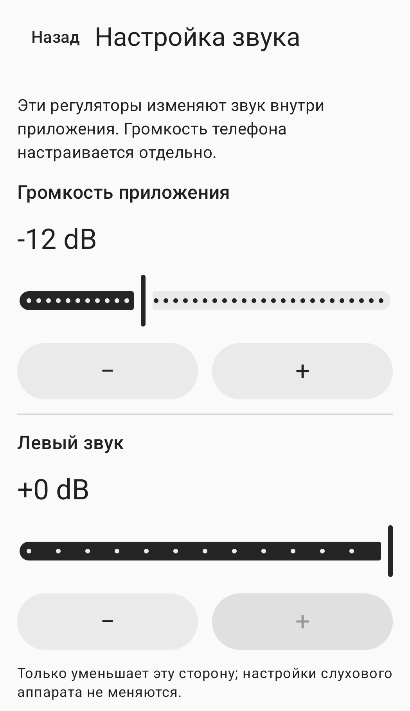

Ручная настройка окружающего звука
Звуки вокруг.Настройте сами.
Звук с микрофона телефона —в выбранные вами наушники.Настройте уровень, левый и правый каналы и тембр.
Как пользоватьсяОбщедоступная версия ещё не выпущена.

Как пользоваться
Подключите, настройте и запустите.
Подключите
Подключите наушники к этому телефону и выберите выход в приложении. По умолчанию используется проводное подключение или USB. Для Bluetooth включите экспериментальный режим и самостоятельно выберите подключённый выход.
Настройте
Настройте уровень приложения, левый и правый каналы и тембр. Громкость мультимедиа телефона регулируется отдельно. Наденьте наушники и подготовьтесь на низкой громкости.
Запустите
Разрешите доступ к микрофону, прочитайте уведомление о сеансе и нажмите кнопку согласия и запуска. Одно лишь разрешение не включает микрофон. Остановить сеанс можно в приложении или его уведомлении.
Настройки звука
Выбирайте настройки сами.
Настройки приложения и громкость мультимедиа телефона не зависят друг от друга.
Уровень приложения
Настройте в приложении уровень звука, передаваемого в выбранные наушники. Также проверьте громкость мультимедиа телефона.
Левый и правый каналы
Уменьшайте уровень каждого канала отдельно. Эти регуляторы не меняют собственные настройки наушников или слухового аппарата.
Тембр
Настройте тембр вручную. Приложение не выполняет автоматическую компенсацию по результатам проверки слуха.
На изображении выше показан фрагмент настоящего экрана настроек звука. Настройки правого канала и тембра остались за его пределами.
Частые вопросы
Прежде чем начать
Можно использовать Bluetooth-наушники?
Bluetooth работает в экспериментальном режиме. Подключите наушники к этому телефону, включите экспериментальный режим и самостоятельно выберите выход. Задержка и качество звука зависят от телефона и наушников.
Сеанс запустится снова при переподключении наушников?
Нет. При потере аудиомаршрута, аудиофокуса или разрешения на микрофон сеанс завершается. Переподключение наушников или повторное открытие приложения не запускает его заново. Когда будете готовы, запустите сеанс вручную.
Что делать, если наушников нет в списке?
Проверьте Bluetooth-подключение для мультимедийного аудио на этом телефоне и обновите список выходов. Подробнее — на странице поддержки.
Как удалить записи или данные приложения?
Приложение не создаёт файлов записи микрофона. О том, как удалить локальные настройки звука, историю запросов разрешений или необязательную запись последнего теста, читайте в руководстве по локальным данным.
Прочитайте перед использованием.
Для взрослых от 18 лет с нормальным слухом: HearAssist — инструмент ручной настройки окружающего звука. Он не предназначен для компенсации потери слуха, замены слуховых аппаратов, проверки слуха, диагностики или лечения заболеваний.
Разборчивость речи, фактическая задержка и акустическая безопасность не подтверждены. Полное устранение шума и нулевая задержка не гарантируются.
Приложение ещё не опубликовано в магазинах приложений для общего доступа. Этот сайт содержит информацию о продукте и материалы поддержки.